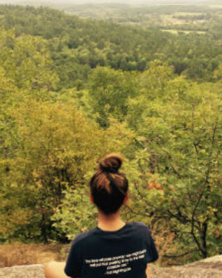
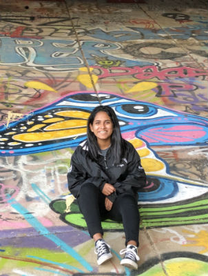

College Activities
- Cardinal PR
- I am on the staff of my colleges student run public relations firm. While it listed as a club, students who are involved, receive a credit towards their major/minor for their work. My responsibilities in this club include assisting others in writing press releases for the current client at the time, running the clubs social media, as well as the clients social media, and assisting the client in any PR needs they may have.
- Theta Phi Alpha Fraternity
-
- In the fall of 2017 I joined Theta Phi Alpha Fraternity. It is a greek organization on campus. Within the organization, my responsibilities included, sitting on the Social Media chair, in which I oversaw all the social media pages, and kept them up to date weekly. I also sat on the Apparel chair, in which I was in charge of designing, organizing and ordering all the shirts and jackets that is needed for the members.

Skills
- HTML and CSS
- One of the classes I took for my major was a web design class. We learned how to make websites using HTML and CSS on Notepadd++. We spent the semester making small websites to lead up to a website about our experiences and skills.
- Microsoft Office: Excel, Powerpoint, and Word
- Over the course of my education, I have mastered power point, excel, and word.
- Time Management
- Through all of my leadership opportunities, I have learned how to manage my time. From balancing my sorority, a full class load, and an on campus part time job, I have learned how to not fall behind on my responsibilties, while still having time left for outside activites.
- Leadership
- Leadership is one of the most important skills one could have. I have demonstrated this skill, by being head chair of social media for Theta Phi Alpha, I have also been a TA for a couple classes.
Achievements
- CPR Certified
- Red Cross Member
- Over 100 Community service hours
Copyright © 2019 Priya Islam